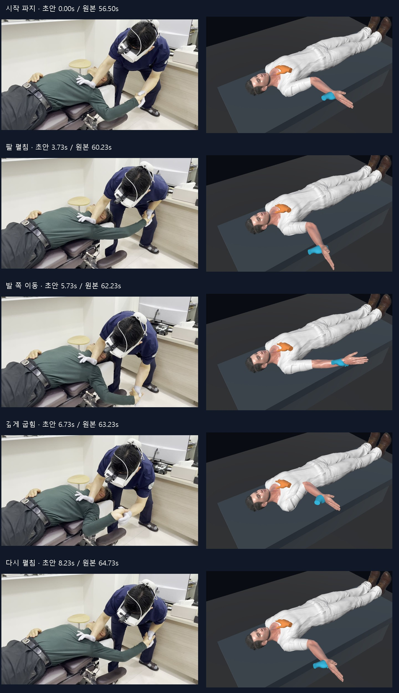

제2늑골 · 양손 가이드 초안
왼쪽은 원본 영상, 오른쪽은 별도 메모리 복제본입니다. 청록 = 시술자 왼손 · 환자 손/손목 유도 / 주황 = 시술자 오른손 · 흉곽 지지
56.50–64.75초의 안정된 시작 파지와 팔 한 주기입니다. 접근·해제까지의 전체 시술이 아닙니다. 영상/텍스트 기반 제작안이며 깊이·가려진 손가락·접촉 위치는 가정이 포함됩니다. 기존 손 녹화 데이터와 실습 시나리오에 연결하지 않았습니다. 실제 접촉·힘·임상 정확성·Quest Play는 미검증입니다.
Unity: GuideChuna → 시험 → 제2늑골 → 양손 영상 가이드 초안 (독립 검토). Play 없이 재생·정지·시점 변경이 가능합니다.
